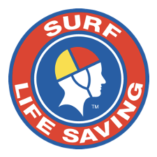

I am a Lecturer and Researcher at the School of Computer Science and Information Technology at Adelaide University, Australia. My work focuses on Cyber Security, Artificial Intelligence, and Software Engineering, particularly the development of AI-driven, self-adaptive, and cyber-resilient software systems. I am interested in how we can make software more secure, more adaptable, and better able to cope with failure, attacks, and changing environments.
Vision
I want to help move software security from reactive patching towards systems that can anticipate threats, adapt to changing conditions, and recover when things go wrong. With the rapid development of Generative AI, I see an opportunity to rethink how software is developed, secured, and operated, while ensuring that the systems we build remain trustworthy, resilient, and safe to use in the real world.
One question has followed me throughout my career: why do complex systems fail in ways we thought we had already protected against? My work has gradually become an attempt to understand that problem and find better ways of designing systems that can cope with failure.
My perspective on resilient computing has been shaped by an unconventional engineering journey. I began my career in industrial engineering, working with 24/7 manufacturing systems where reliability was a practical necessity and system failure had immediate consequences. I later moved into computer science and pursued my PhD in AI-driven, self-adaptive software engineering. Along the way, I also worked on applied AI and machine-learning problems in industry and technology ventures. The following provides a bird’s-eye view of my career trajectory:
Lead Investigator (A$250,000)
Active & FutureDirecting the Adaptive Dynamic Application Orchestrator project to synthesize AI-driven tactical software in high-tempo, contested operational domains.
Lecturer & Course Coordinator
2025–PresentLeads Cybersecurity, Cloud Systems, and AI curricula with a 99% SELT student satisfaction score, mentoring postgraduate HDR researchers and capstones.
Doctoral Researcher & Tech Lead
2021–2025Engineered self-adaptive cyber-resilient software architectures while deploying production machine learning for community platforms (Migrova & Kindship).
Cyber Security Research Assistant
2020–2021+Investigated cyber resilience for tactical Command-and-Control (C2) systems, evaluating attack vectors and publishing in ACM Computing Surveys.
Process Engineer & Supervisor
2013–2020Led 24/7 high-speed production lines, managed shifts of 20+ technicians, and integrated Industry 4.0 telemetry under continuous operational pressure.
Following my doctoral research, I expanded this work into defence and critical infrastructure, investigating cyber resilience in military Command-and-Control systems. Working with academic, industry, government, and defence partners, I explored how vulnerabilities can propagate through complex systems and how software can detect, respond to, and adapt to changing threats.
At Kindship, I developed a machine-learning recommendation system to help families find suitable therapists for children with disability, taking into account individual needs and practitioner expertise. At Migrova, I worked on AI-based matching for international migrants and helped secure a A$100,000 Seed-Start grant from the South Australian Department of State Development. These experiences reinforced something I value in research: the most interesting technical problems often come from real situations where technology needs to work for people.
More recently, my work has increasingly focused on Generative AI and its role in software engineering and cyber security, particularly in AI-assisted secure code generation, vulnerability mitigation, automated software adaptation, and building systems that can continue operating when their environment becomes uncertain or hostile. Today, I lead the A$250,000 Adaptive Dynamic Application Orchestrator project with Defence Trailblazer and DEWC Services, exploring how AI can support the construction, validation, and deployment of mission-critical applications in contested environments where communication may be unreliable, infrastructure degraded, and conditions constantly changing. Alongside my research, I teach Cybersecurity, AI, and Software Engineering and mentor Higher Degree by Research students, bringing real research problems and experiences into the classroom to help students develop the curiosity and judgement needed to build systems that people can rely on.
Collaborations & Industry Partners:
I collaborate actively with leading international technology organizations, government departments, defence groups, and research centres:

Memberships & Professional Activities:
I actively engage with the global academic and professional community through memberships and editorial contributions in prestigious organisations. By collaborating with leading tech giants and peer researchers, I ensure that my research and teaching remain at the forefront of industry advancements.